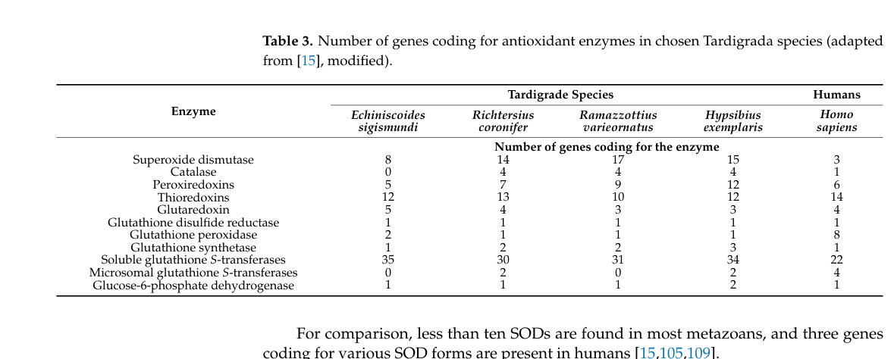

Putative Cu/Zn superoxide dismutase from the tardigrade Ramazzottius varieornatus, one of approximately 16 CuZnSOD paralogs in the expanded antioxidant gene family of this extremotolerant organism. Sequence analysis shows 66% identity to human SOD1 (the highest among the paralogs analyzed) and preserves all four Cu-binding histidines (H46, H48, H63, H120), the four Zn-binding residues (H63, H71, H80, D83), and both intrachain disulfide cysteines (C57, C146). This is consistent with canonical SOD activity, though functional confirmation is lacking. No gene symbol "RvSOD" number has been assigned in the primary literature (only RvSOD15 = RvY_13070 is explicitly mapped).
| GO Term | Evidence | Action | Reason |
|---|---|---|---|
|
GO:0004784
superoxide dismutase activity
|
IEA
GO_REF:0000120 |
ACCEPT |
Summary: Sequence conservation analysis (see file:RAMVA/RvY_13070/RvY_13070-bioinformatics/RESULTS.md) shows all four Cu-binding histidines, all four Zn-binding residues, and both disulfide cysteines are preserved. At 66% identity to human SOD1, this is the most conserved paralog analyzed. Canonical SOD activity is plausible but not experimentally verified. Note that Sim & Inoue (PMID:37358501) caution that some R. varieornatus SOD paralogs have subtle structural defects (electrostatic loop deletions, β3 sheet truncations) not detectable by primary sequence alone.
Reason: All catalytic residues are preserved at the sequence level. Without biochemical data to contradict the family-based annotation, ACCEPT is appropriate, though the confidence is limited to sequence-level inference.
Supporting Evidence:
file:RAMVA/RvY_13070/RvY_13070-bioinformatics/RESULTS.md
RvY_00651 | A0A1D1UKR0 | 154 | 4/4 | 4/4 | 2/2 | 66.0% | Likely functional
|
|
GO:0005507
copper ion binding
|
IEA
GO_REF:0000002 |
ACCEPT |
Summary: All four canonical Cu-binding histidine residues are preserved in the sequence. Copper binding is very likely.
|
|
GO:0006801
superoxide metabolic process
|
IEA
GO_REF:0000002 |
KEEP AS NON CORE |
Summary: Redundant parent term of GO:0019430 (removal of superoxide radicals), which is the more specific and preferred annotation. Both are currently present.
Reason: Technically correct but less informative than GO:0019430. Kept as non-core.
|
|
GO:0019430
removal of superoxide radicals
|
IEA
GO_REF:0000108 |
ACCEPT |
Summary: This is the expected biological process for a canonical CuZnSOD and is inferred by logical reasoning from the enzymatic activity annotation.
|
|
GO:0046872
metal ion binding
|
IEA
GO_REF:0000002 |
KEEP AS NON CORE |
Summary: Parent term of the more specific GO:0005507 (copper ion binding) already annotated. Both copper and zinc binding are expected for this protein, but this generic parent term is less informative.
Reason: Redundant with the more specific Cu/Zn binding annotations. Kept as non-core.
|
The research report should be a detailed narrative explaining the function, biological processes, and localization of the gene product. Citations should be given for all claims.
You should prioritize authoritative reviews and primary scientific literature when conducting research. You can supplement
this with annotations you find in gene/protein databases, but these can be outdated or inaccurate.
We are specifically interested in the primary function of the gene - for enzymes, what reaction is catalyzed, and what is the substrate specificity? For transporters, what is the substrate? For structural proteins or adapters, what is the broader structural role? For signaling molecules, what is the role in the pathway.
We are interested in where in or outside the cell the gene product carries out its function.
We are also interested in the signaling or biochemical pathways in which the gene functions. We are less interested in broad pleiotropic effects, except where these elucidate the precise role.
Include evidence where possible. We are interested in both experimental evidence as well as inference from structure, evolution, or bioinformatic analysis. Precise studies should be prioritized over high-throughput, where available.
RvY_00651-1 (UniProt A0A1D1UKR0) is annotated in UniProt as a Cu/Zn superoxide dismutase (CuZnSOD; EC 1.15.1.1) from the tardigrade Ramazzottius varieornatus. In the retrieved peer‑reviewed literature, this exact gene symbol and UniProt accession are not explicitly mentioned, so gene-specific conclusions (expression profile, localization, kinetics) cannot be directly cited. However, recent organism- and family-level studies in R. varieornatus provide strong support for high-confidence family-based inference: (i) CuZnSODs catalyze superoxide dismutation to O2 and H2O2; (ii) R. varieornatus has an expanded SOD gene repertoire; and (iii) at least one R. varieornatus CuZnSOD paralog has been structurally characterized and shows non-canonical active-site features, implying functional diversification among paralogs. (sim2023structureofa pages 3-4, sadowskabartosz2024antioxidantdefensein pages 13-15, sim2023structureofa pages 1-2, sadowskabartosz2024antioxidantdefensein pages 15-16)
| Item | Summary | Evidence/Citation |
|---|---|---|
| identity/verification | No retrieved paper directly mentions UniProt A0A1D1UKR0 or gene symbol RvY_00651-1 / RvY_00651. The target can therefore only be mapped indirectly to a Ramazzottius varieornatus Cu/Zn superoxide dismutase (CuZnSOD) by the supplied UniProt annotation and the broader tardigrade CuZnSOD literature; caution is required because the literature instead names related loci/proteins such as RvSOD15 and other RvSOD paralogs. (sim2023structureofa pages 3-4, sim2023structureofa pages 2-3) | Sim & Inoue 2023 characterize RvSOD15 and additional RvSOD loci, but no retrieved text links them to A0A1D1UKR0/RvY_00651-1; a targeted evidence scan found no explicit mention of the accession/gene symbol. (sim2023structureofa pages 3-4, sim2023structureofa pages 2-3) |
| reaction | The family’s primary enzymatic role is dismutation of superoxide radical: 2 O2•− + 2 H+ → O2 + H2O2. Thus the substrate is superoxide and the products are dioxygen and hydrogen peroxide. (sim2023structureofa pages 1-2, sadowskabartosz2024antioxidantdefensein pages 13-15) | Both the 2023 structural paper and 2024 review explicitly describe CuZnSOD/SOD activity as superoxide-to-oxygen-plus-hydrogen-peroxide conversion. (sim2023structureofa pages 1-2, sadowskabartosz2024antioxidantdefensein pages 13-15) |
| cofactors | Canonical CuZnSODs require copper at the catalytic site and zinc as a structural/catalytic-support metal. For tardigrade RvSOD15, Cu and Zn were experimentally supported by anomalous scattering in the crystal structure. (sim2023structureofa pages 3-4, sim2023structureofa pages 2-3) | RvSOD15 was refolded/metallated with Cu and Zn and structurally resolved as a Cu/Zn-containing SOD-like protein. (sim2023structureofa pages 3-4, sim2023structureofa pages 2-3) |
| localization | For the R. varieornatus SOD repertoire overall, SODs are inferred to occupy mitochondria, cytosol, and peroxisomes. A specific related CuZnSOD, RvSOD15, is predicted to contain an N-terminal signal peptide, supporting likely secreted/extracellular localization for that paralog. Localization of A0A1D1UKR0 itself is not directly established in the retrieved literature. (sadowskabartosz2024antioxidantdefensein pages 13-15, sim2023structureofa pages 2-3) | Review-level synthesis assigns tardigrade SODs to multiple compartments; Sim & Inoue specifically report a signal peptide for RvSOD15. (sadowskabartosz2024antioxidantdefensein pages 13-15, sim2023structureofa pages 2-3) |
| gene family expansion | R. varieornatus has an expanded SOD complement relative to typical metazoans: one recent review reports 17 SOD genes in R. varieornatus (with text also mentioning 16), whereas humans have 3 and many metazoans have <10. This supports antioxidant gene expansion as part of tardigrade stress biology. (sadowskabartosz2024antioxidantdefensein pages 13-15, sadowskabartosz2024antioxidantdefensein pages 15-16, sadowskabartosz2024antioxidantdefensein media 09ae9d6d) | Table/figure-supported review evidence reports 17 SOD genes for R. varieornatus and highlights expansion across tardigrades. (sadowskabartosz2024antioxidantdefensein pages 13-15, sadowskabartosz2024antioxidantdefensein pages 15-16, sadowskabartosz2024antioxidantdefensein media 09ae9d6d) |
| unusual/noncanonical paralogs | Not all R. varieornatus SOD-family proteins appear to be canonical enzymes. RvSOD15 has a His87→Val substitution at a copper-ligating position; additional RvSODs show deleted electrostatic loops/β3 sheets, truncations, or altered copper-binding residues. Authors propose that some paralogs may have lost classical SOD activity. This matters when inferring function for A0A1D1UKR0: family membership supports annotation, but not every paralog is necessarily catalytically typical. (sim2023structureofa pages 1-2, sim2023structureofa pages 4-7, sadowskabartosz2024antioxidantdefensein pages 15-16) | Structural analysis directly supports noncanonical features in several RvSOD proteins and cautions against assuming uniform catalytic activity across all paralogs. (sim2023structureofa pages 1-2, sim2023structureofa pages 4-7, sadowskabartosz2024antioxidantdefensein pages 15-16) |
| stress regulation evidence | SOD biology in tardigrades is linked to oxidative-stress defense during desiccation/cryptobiosis. Retrieved sources report that tardigrades have an expanded antioxidant toolkit; SOD expression/activity is described as upregulated under dried conditions in general, and a 2024 review notes general SOD upregulation in tun states in some species, though species-specific responses differ. For R. varieornatus, CuZnSODs are described as highly expressed, but the retrieved evidence does not provide a direct stress-response profile for A0A1D1UKR0 specifically. (sim2023structureofa pages 1-2, sadowskabartosz2024antioxidantdefensein pages 16-17, sadowskabartosz2024antioxidantdefensein pages 13-15) | Evidence supports a role for SODs in tardigrade oxidative stress resistance, but the exact desiccation/UV/radiation regulation of the user’s target accession remains unmeasured in the retrieved papers. (sim2023structureofa pages 1-2, sadowskabartosz2024antioxidantdefensein pages 16-17, sadowskabartosz2024antioxidantdefensein pages 13-15) |
| key recent references 2023-2024 | Sim & Inoue 2023 provides the most direct recent mechanistic evidence for a R. varieornatus CuZnSOD-family protein (RvSOD15) and highlights noncanonical structural evolution. Sadowska-Bartosz & Bartosz 2024 synthesizes tardigrade antioxidant defense, including SOD gene counts, likely compartmentation, and stress-related interpretation. (sim2023structureofa pages 3-4, sadowskabartosz2024antioxidantdefensein pages 13-15, sadowskabartosz2024antioxidantdefensein pages 15-16) | These are the strongest retrieved 2023–2024 sources for annotating the target by family/organism context. (sim2023structureofa pages 3-4, sadowskabartosz2024antioxidantdefensein pages 13-15, sadowskabartosz2024antioxidantdefensein pages 15-16) |
| gaps/limitations | The major limitation is target-specific evidence scarcity: no retrieved study explicitly names A0A1D1UKR0 or RvY_00651-1, no paper directly measures its enzymatic activity, substrate specificity beyond family expectation, expression pattern, or subcellular localization. Therefore, annotation for the user target should be presented as high-confidence family-based inference (CuZnSOD, EC 1.15.1.1) within R. varieornatus, while acknowledging that some RvSOD paralogs are noncanonical and may not retain full classical activity. (sim2023structureofa pages 3-4, sim2023structureofa pages 4-7, sim2023structureofa pages 2-3) | The available evidence supports cautious functional inference, not definitive target-level experimental annotation. (sim2023structureofa pages 3-4, sim2023structureofa pages 4-7, sim2023structureofa pages 2-3) |
Table: This table summarizes the best-supported functional annotation for the target Ramazzottius varieornatus Cu/Zn SOD candidate using recent literature and explicitly notes where evidence is indirect. It is useful because the retrieved papers do not directly name A0A1D1UKR0/RvY_00651-1, so target mapping must be inferred from family-level and paralog-level data.
The user-supplied UniProt record defines A0A1D1UKR0 as a Cu/Zn superoxide dismutase in R. varieornatus (tardigrade). While the retrieved papers do not mention A0A1D1UKR0 or “RvY_00651-1” explicitly, they establish that R. varieornatus encodes multiple Cu/Zn SOD-like proteins (RvSOD paralogs) and that CuZnSODs are part of tardigrade antioxidant defense systems. (sim2023structureofa pages 3-4, sadowskabartosz2024antioxidantdefensein pages 15-16)
Because the accession/gene symbol A0A1D1UKR0 / RvY_00651-1 does not appear in the retrieved full texts, mapping the target to a specific named paralog (e.g., “RvSOD15”) is not possible from the retrieved evidence. All target-specific functional statements below are therefore either (a) direct CuZnSOD-family enzymology, or (b) R. varieornatus / tardigrade SOD-system context. (sim2023structureofa pages 3-4, sim2023structureofa pages 2-3)
Superoxide dismutases (SODs) are central antioxidant enzymes that detoxify the superoxide radical (O2•−). The key biochemical reaction, explicitly stated for CuZnSODs in a 2023 R. varieornatus structural paper, is:
2 O2•− + 2 H+ → O2 + H2O2
This establishes superoxide as the substrate and dioxygen plus hydrogen peroxide as products. (sim2023structureofa pages 1-2)
A 2024 review focused on tardigrade antioxidant defenses likewise summarizes SOD function as converting superoxide to molecular oxygen and hydrogen peroxide. (sadowskabartosz2024antioxidantdefensein pages 13-15)
CuZnSODs are characterized by a catalytic copper center (redox-active) and a zinc site that contributes to stability and proper active-site geometry. In R. varieornatus, Sim & Inoue (2023) solved the crystal structure of a Cu/Zn-containing SOD-family protein (RvSOD15), confirming copper and zinc in the structure using anomalous scattering data—supporting that R. varieornatus CuZnSOD-family members can bind both metals. (sim2023structureofa pages 3-4, sim2023structureofa pages 2-3)
A tardigrade-focused 2024 review states that SODs in R. varieornatus are likely located within mitochondria, cytosol, and peroxisomes, consistent with compartmentalized ROS production and detoxification in eukaryotes. (sadowskabartosz2024antioxidantdefensein pages 13-15)
Additionally, the structurally characterized R. varieornatus paralog RvSOD15 is predicted to have an N-terminal signal peptide, implying potential secretion/extracellular localization for that paralog class—highlighting that Cu/Zn SOD family members can occupy multiple cellular/extracellular niches. (sim2023structureofa pages 2-3)
A 2024 synthesis of tardigrade antioxidant defense reports that R. varieornatus has 17 SOD genes, versus 3 in humans, and notes that most metazoans have <10 SODs. (sadowskabartosz2024antioxidantdefensein pages 15-16)
This gene-count claim is visually supported by the review’s table of antioxidant gene counts across species, where R. varieornatus is listed with 17 SOD genes. (sadowskabartosz2024antioxidantdefensein media 09ae9d6d)
A key recent advance is a 2023 crystal structure of a R. varieornatus CuZnSOD-family protein (RvSOD15). The paper reports an unusual substitution: a histidine ligand of the catalytic copper center is replaced by valine (Val87), and concludes that RvSOD15 and other RvSODs may have evolved atypical features (e.g., electrostatic-loop deletion, unusual metal-binding residues), suggesting that some paralogs may have reduced or lost canonical SOD activity. (sim2023structureofa pages 1-2, sim2023structureofa pages 4-7)
A 2024 review reiterates this interpretation, noting RvSOD15 (CuZnSOD) with His87→Val and summarizing that some RvSOD paralogs may have evolved away from canonical function. (sadowskabartosz2024antioxidantdefensein pages 15-16)
Implication for annotating A0A1D1UKR0: although UniProt identifies it as CuZnSOD, and family-level inference is strong, R. varieornatus contains non-canonical SOD-like paralogs; therefore, definitive statements about catalytic efficiency or intact metal-ligand architecture require gene-specific experimental validation. (sim2023structureofa pages 4-7, sadowskabartosz2024antioxidantdefensein pages 15-16)
The 2023 structural paper states that SOD expression and activity in anhydrobiotic tardigrades are known to be upregulated under dried conditions, tying SOD systems to dehydration-associated oxidative stress protection. (sim2023structureofa pages 1-2)
A 2024 review synthesizes evidence that antioxidant enzymes, including SODs, can be broadly induced in tun (cryptobiotic) states, while also emphasizing species-specific patterns in measured SOD activity across tardigrades (increases in some species, decreases or no change in others). (sadowskabartosz2024antioxidantdefensein pages 16-17)
For R. varieornatus specifically, the review states CuZnSODs are highly expressed, but the retrieved excerpted evidence does not provide a quantitative fold-change for the target gene during desiccation/UV/radiation. (sadowskabartosz2024antioxidantdefensein pages 13-15)
Direct real-world implementations of a specific R. varieornatus CuZnSOD paralog were not identified in the retrieved full texts. However, the 2024 review provides application-relevant analysis that tardigrade oxidative-stress proteins can enable heterologous engineering of oxidative-stress resistance, citing experimental examples for other tardigrade antioxidant proteins (e.g., a tardigrade Mn/Zn-binding peroxidase expressed in HEK293 cells increasing H2O2 resistance). This demonstrates a plausible translational pathway for antioxidant proteins broadly, although it is not direct evidence for A0A1D1UKR0 itself. (sadowskabartosz2024antioxidantdefensein pages 15-16)
Two consistent expert-level interpretations emerge from recent authoritative sources:
Antioxidant capacity is a major contributor to tardigrade extreme resistance. A 2024 review emphasizes that antioxidant enzymes and small-molecule antioxidants are an important component of the tardigrade resistance toolkit and discusses their induction in cryptobiosis and stress exposures. (sadowskabartosz2024antioxidantdefensein pages 13-15)
Gene duplications/expansions do not automatically imply increased enzymatic function. The 2023 structural study of RvSOD15 argues that some R. varieornatus SOD paralogs may have evolved to lose SOD activity, implying that interpreting SOD family expansion requires careful functional testing of each paralog. (sim2023structureofa pages 1-2, sim2023structureofa pages 4-7)
Based on CuZnSOD enzymology and the UniProt family/domain assignment (Cu/Zn SOD family), the primary inferred function of A0A1D1UKR0 is superoxide dismutase activity catalyzing the conversion of superoxide to O2 and H2O2. (sadowskabartosz2024antioxidantdefensein pages 13-15, sim2023structureofa pages 1-2)
The gene product is expected to participate in reactive oxygen species detoxification and oxidative-stress defense relevant to tardigrade stress physiology (including dehydration/cryptobiosis contexts). (sim2023structureofa pages 1-2, sadowskabartosz2024antioxidantdefensein pages 13-15)
The best available R. varieornatus-level synthesis places SODs across mitochondria, cytosol, and peroxisomes. Without a direct mapping from A0A1D1UKR0 to a specific paralog class (e.g., signal-peptide-containing secreted SODs), localization for the target should be treated as unknown within those plausible compartments until sequence-based localization predictors (signal peptide, peroxisomal targeting signal, mitochondrial targeting peptide) are applied directly to A0A1D1UKR0, or localization is experimentally determined. (sadowskabartosz2024antioxidantdefensein pages 13-15, sim2023structureofa pages 2-3)
Because A0A1D1UKR0 / RvY_00651-1 is not explicitly referenced in the retrieved papers, the following are the most critical missing evidence types for gene-level annotation:
References
(sim2023structureofa pages 3-4): Kee-Shin Sim and Tsuyoshi Inoue. Structure of a superoxide dismutase from a tardigrade: ramazzottius varieornatus strain yokozuna-1. Acta crystallographica. Section F, Structural biology communications, 79:169-179, Jun 2023. URL: https://doi.org/10.1107/s2053230x2300523x, doi:10.1107/s2053230x2300523x. This article has 5 citations.
(sadowskabartosz2024antioxidantdefensein pages 13-15): Izabela Sadowska-Bartosz and Grzegorz Bartosz. Antioxidant defense in the toughest animals on the earth: its contribution to the extreme resistance of tardigrades. International Journal of Molecular Sciences, 25:8393, Aug 2024. URL: https://doi.org/10.3390/ijms25158393, doi:10.3390/ijms25158393. This article has 14 citations.
(sim2023structureofa pages 1-2): Kee-Shin Sim and Tsuyoshi Inoue. Structure of a superoxide dismutase from a tardigrade: ramazzottius varieornatus strain yokozuna-1. Acta crystallographica. Section F, Structural biology communications, 79:169-179, Jun 2023. URL: https://doi.org/10.1107/s2053230x2300523x, doi:10.1107/s2053230x2300523x. This article has 5 citations.
(sadowskabartosz2024antioxidantdefensein pages 15-16): Izabela Sadowska-Bartosz and Grzegorz Bartosz. Antioxidant defense in the toughest animals on the earth: its contribution to the extreme resistance of tardigrades. International Journal of Molecular Sciences, 25:8393, Aug 2024. URL: https://doi.org/10.3390/ijms25158393, doi:10.3390/ijms25158393. This article has 14 citations.
(sim2023structureofa pages 2-3): Kee-Shin Sim and Tsuyoshi Inoue. Structure of a superoxide dismutase from a tardigrade: ramazzottius varieornatus strain yokozuna-1. Acta crystallographica. Section F, Structural biology communications, 79:169-179, Jun 2023. URL: https://doi.org/10.1107/s2053230x2300523x, doi:10.1107/s2053230x2300523x. This article has 5 citations.
(sadowskabartosz2024antioxidantdefensein media 09ae9d6d): Izabela Sadowska-Bartosz and Grzegorz Bartosz. Antioxidant defense in the toughest animals on the earth: its contribution to the extreme resistance of tardigrades. International Journal of Molecular Sciences, 25:8393, Aug 2024. URL: https://doi.org/10.3390/ijms25158393, doi:10.3390/ijms25158393. This article has 14 citations.
(sim2023structureofa pages 4-7): Kee-Shin Sim and Tsuyoshi Inoue. Structure of a superoxide dismutase from a tardigrade: ramazzottius varieornatus strain yokozuna-1. Acta crystallographica. Section F, Structural biology communications, 79:169-179, Jun 2023. URL: https://doi.org/10.1107/s2053230x2300523x, doi:10.1107/s2053230x2300523x. This article has 5 citations.
(sadowskabartosz2024antioxidantdefensein pages 16-17): Izabela Sadowska-Bartosz and Grzegorz Bartosz. Antioxidant defense in the toughest animals on the earth: its contribution to the extreme resistance of tardigrades. International Journal of Molecular Sciences, 25:8393, Aug 2024. URL: https://doi.org/10.3390/ijms25158393, doi:10.3390/ijms25158393. This article has 14 citations.
(sadowskabartosz2024antioxidantdefensein media 3107e140): Izabela Sadowska-Bartosz and Grzegorz Bartosz. Antioxidant defense in the toughest animals on the earth: its contribution to the extreme resistance of tardigrades. International Journal of Molecular Sciences, 25:8393, Aug 2024. URL: https://doi.org/10.3390/ijms25158393, doi:10.3390/ijms25158393. This article has 14 citations.

id: A0A1D1UKR0
gene_symbol: RvY_00651
product_type: PROTEIN
status: IN_PROGRESS
taxon:
id: NCBITaxon:947166
label: Ramazzottius varieornatus
description: >-
Putative Cu/Zn superoxide dismutase from the tardigrade Ramazzottius varieornatus,
one of approximately 16 CuZnSOD paralogs in the expanded antioxidant gene family
of this extremotolerant organism. Sequence analysis shows 66% identity to human
SOD1 (the highest among the paralogs analyzed) and preserves all four Cu-binding
histidines (H46, H48, H63, H120), the four Zn-binding residues (H63, H71, H80,
D83), and both intrachain disulfide cysteines (C57, C146). This is consistent
with canonical SOD activity, though functional confirmation is lacking. No gene
symbol "RvSOD" number has been assigned in the primary literature (only RvSOD15
= RvY_13070 is explicitly mapped).
existing_annotations:
- term:
id: GO:0004784
label: superoxide dismutase activity
evidence_type: IEA
original_reference_id: GO_REF:0000120
review:
summary: >-
Sequence conservation analysis (see file:RAMVA/RvY_13070/RvY_13070-bioinformatics/RESULTS.md)
shows all four Cu-binding histidines, all four Zn-binding residues, and both
disulfide cysteines are preserved. At 66% identity to human SOD1, this is the
most conserved paralog analyzed. Canonical SOD activity is plausible but not
experimentally verified. Note that Sim & Inoue (PMID:37358501) caution that
some R. varieornatus SOD paralogs have subtle structural defects (electrostatic
loop deletions, β3 sheet truncations) not detectable by primary sequence alone.
action: ACCEPT
reason: >-
All catalytic residues are preserved at the sequence level. Without biochemical
data to contradict the family-based annotation, ACCEPT is appropriate, though
the confidence is limited to sequence-level inference.
supported_by:
- reference_id: file:RAMVA/RvY_13070/RvY_13070-bioinformatics/RESULTS.md
supporting_text: >-
RvY_00651 | A0A1D1UKR0 | 154 | 4/4 | 4/4 | 2/2 | 66.0% | Likely functional
- term:
id: GO:0005507
label: copper ion binding
evidence_type: IEA
original_reference_id: GO_REF:0000002
review:
summary: >-
All four canonical Cu-binding histidine residues are preserved in the
sequence. Copper binding is very likely.
action: ACCEPT
- term:
id: GO:0006801
label: superoxide metabolic process
evidence_type: IEA
original_reference_id: GO_REF:0000002
review:
summary: >-
Redundant parent term of GO:0019430 (removal of superoxide radicals), which
is the more specific and preferred annotation. Both are currently present.
action: KEEP_AS_NON_CORE
reason: >-
Technically correct but less informative than GO:0019430. Kept as non-core.
- term:
id: GO:0019430
label: removal of superoxide radicals
evidence_type: IEA
original_reference_id: GO_REF:0000108
review:
summary: >-
This is the expected biological process for a canonical CuZnSOD and is
inferred by logical reasoning from the enzymatic activity annotation.
action: ACCEPT
- term:
id: GO:0046872
label: metal ion binding
evidence_type: IEA
original_reference_id: GO_REF:0000002
review:
summary: >-
Parent term of the more specific GO:0005507 (copper ion binding) already
annotated. Both copper and zinc binding are expected for this protein, but
this generic parent term is less informative.
action: KEEP_AS_NON_CORE
reason: >-
Redundant with the more specific Cu/Zn binding annotations. Kept as non-core.
references:
- id: GO_REF:0000002
title: Gene Ontology annotation through association of InterPro records with GO
terms
findings: []
- id: GO_REF:0000108
title: Automatic assignment of GO terms using logical inference, based on on inter-ontology
links
findings: []
- id: GO_REF:0000120
title: Combined Automated Annotation using Multiple IEA Methods
findings: []
- id: file:RAMVA/RvY_13070/RvY_13070-bioinformatics/RESULTS.md
title: Bioinformatics analysis of Cu/Zn SOD paralogs in R. varieornatus
findings:
- statement: All 10 catalytic residues (Cu ligands, Zn ligands, disulfide cysteines) are preserved in RvY_00651 when aligned to human SOD1
- id: PMID:37358501
title: Structure of a Ramazzottius varieornatus Cu/Zn SOD paralog (Sim and Inoue
2023).
findings:
- statement: Structural and biochemical work on the related paralog RvSOD15 (PDB
7ypp/7ypr) cautions that subtle structural defects (electrostatic loop deletions,
atypical Cu coordination) can render Cu/Zn SOD-fold paralogs catalytically
divergent even when primary-sequence residues are preserved; this caveat
applies broadly to the expanded R. varieornatus SOD gene family.
- id: file:RAMVA/RvY_00651/RvY_00651-deep-research-falcon.md
title: Deep research report on RvY_00651 (Falcon/Edison Scientific Literature)
findings:
- statement: No primary publication directly characterizes RvY_00651 / A0A1D1UKR0;
sequence-level annotation as a canonical Cu/Zn SOD is supported by 66 percent
identity to human SOD1 plus full conservation of catalytic Cu/Zn ligands
and disulfide cysteines, while the Sim 2023 structural caveats and the
2024 tardigrade antioxidant defense review (Sadowska-Bartosz 2024) keep
open the possibility of paralog-specific functional divergence in this
expanded gene family (R. varieornatus has approximately 17 SOD genes).
{kind=link}